Simulate with complex geometries and complex physics
CorrectionPressureAlgorithm
compute the correction pressure according to a Chorin-like correction ansatz
Let us suppose we have a velocity field 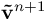 that stems from the numerical integration of the
momentum equation (see EquationsToSOlve), i.e. we have computed
 that exactly leads to the correct divergence, that is
we subtract the two equations from one another, that is
that exactly leads to the correct divergence, that is
we subtract the two equations from one another, that is
 For the term
For the term  see VirtualTimeStepSize.
By application of the divergence operator from left, we obtain
see VirtualTimeStepSize.
By application of the divergence operator from left, we obtain
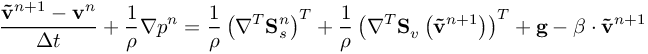
The resulting velocity field does most probably not provide the correct value of
divergence of velocity 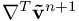 . Let us suppose there is a correction to the pressure
that exactly leads to the correct divergence, that is
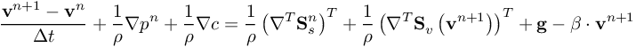
With the presumption that 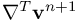 has the correct value. In order to find the correction
pressure we subtract the two equations from one another, that is
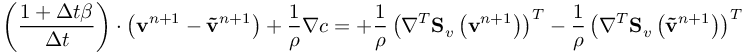
Written in another way, we have
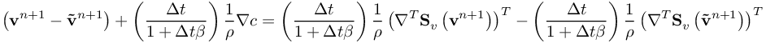
For incompressible problems with constant viscosity, we can simplify
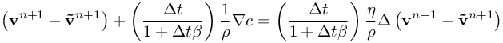
The correction pressure stems from the simplified correction ansatz of a given velocity field (marked by tilde) towards
a velocity field with a desired divergence of velocity.
see VirtualTimeStepSize.
By application of the divergence operator from left, we obtain
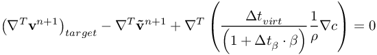
The desired divergence of the velocity is depending on the compressibility of the fluid as well as on temporal changes of the density due to other effects
such as chemical reaction, expansion due to heating, etc.
Derivation of this term is found in DesiredAndNominalDivergenceOfVelocity.
Having a formulation for the divergence of velocity, the equation to be solved for the correction pressure is
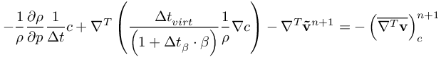
which numerically leads to the (linear) system to be solved
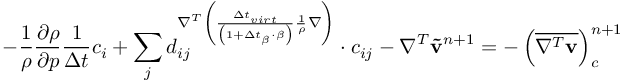
The result of this equation is stored in %ind_c% .
| List of members: | |
|---|---|
| DesiredAndNominalDivergenceOfVelocity | derive a formulation for the desired divergence of velocity |
| VirtualTimeStepSize | virtual time step size to control the correction pressure or the divergence of velocity |